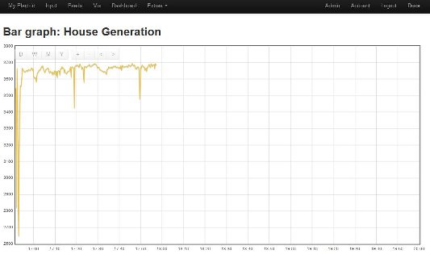

Hi,
I have a new recent problem. I am running emonhub on my pi and all has been working fine. Today after a reboot of the pi mysql did not start. However, I started it manually and my feeds are all OK again. I tried several reboots but each time I had to start the mysql service manually each time. I don't know if this is related to my main problem which is that my graphs have stopped updating - they are just blank from the time of restart:

My settings.php looks like this:
/*
Database connection settings
*/
$username = "root";
$password = "password";
$server = "localhost";
$database = "emoncms";
$redis_enabled = true;Mysql says the emoncms database is ok when I run a check on it:
pi@raspberrypi /var/log/emonhub $ mysqlcheck -c emoncms -u root -p Enter password: emoncms.dashboard OK emoncms.event OK emoncms.event_settings OK emoncms.feeds OK emoncms.input OK emoncms.multigraph OK emoncms.myelectric OK emoncms.rememberme OK emoncms.users OK pi@raspberrypi /var/log/emonhub $
A tail of emonhub.log shows the following:
2016-04-17 20:08:55,392 INFO EmonHub Pre-Release Development Version (rc1.2)
2016-04-17 20:08:55,395 INFO Opening hub...
2016-04-17 20:27:45,031 WARNING emonCMS.org couldn't send to server, Exception:
Traceback (most recent call last):
File "/home/pi/emonhub/src/emonhub_reporter.py", line 227, in _send_post
response = urllib2.urlopen(request, timeout=60)
File "/usr/lib/python2.7/urllib2.py", line 127, in urlopen
return _opener.open(url, data, timeout)
File "/usr/lib/python2.7/urllib2.py", line 401, in open
response = self._open(req, data)
File "/usr/lib/python2.7/urllib2.py", line 419, in _open
'_open', req)
File "/usr/lib/python2.7/urllib2.py", line 379, in _call_chain
result = func(*args)
File "/usr/lib/python2.7/urllib2.py", line 1211, in http_open
return self.do_open(httplib.HTTPConnection, req)
File "/usr/lib/python2.7/urllib2.py", line 1184, in do_open
r = h.getresponse(buffering=True)
File "/usr/lib/python2.7/httplib.py", line 1034, in getresponse
response.begin()
File "/usr/lib/python2.7/httplib.py", line 407, in begin
version, status, reason = self._read_status()
File "/usr/lib/python2.7/httplib.py", line 365, in _read_status
line = self.fp.readline()
File "/usr/lib/python2.7/socket.py", line 447, in readline
data = self._sock.recv(self._rbufsize)
error: [Errno 104] Connection reset by peer
2016-04-17 20:27:45,034 WARNING emonCMS.org send failure: wanted 'ok' but got ''
Although to my mind the errors are related to emoncms.org rather than my local emoncms. The graphs are fine on emoncms.org.
Any ideas?
Thanks.
Edit - Formatted text - Moderator, BT
Re: Emonhub Local Graphs not updating
You haven't said much about the emoncms installed locally.
If you set the loglevel to DEBUG in emonhub.conf you may get more info, if not pointing to any issues it should at least confirm packets are being recieved by emoncms ok.
The errors posted do point towards emoncms.org resetting the connection on one occasion but the lack of any other message occupancies and data being found ok there suggests it was a single glitch and unlikely to be linked.
Did you do any updating etc prior to the issue appearing?
How much space to you have left? (df -h)
Paul
Re: Emonhub Local Graphs not updating
The emoncms installed locally is: v8.4.0, bufferedwrite:0.0.2. I believe it was left at this version as later versions events module did not work properly.
Setting loglevel to DEBUG does show that packets are being recieved OK (my feeds are updating OK).
No updating done prior to issue appearing - I just rebooted pi which I do once every few months to make sure everything starts OK - I'm using a NAS as the HDD for the pi and there were issues in the past where it would not come back after a power failure.
Because I'm using the NAS plenty of freespace left:
pi@raspberrypi ~/emonhub/conf $
The other thing I thought of was maybe the time on the pi but the ntp service is running fine on the pi and my PC so all times are synchronised.
Re: Emonhub Local Graphs not updating
Sorry Iain, I missed this reply somehow. Not that it would've helped you much if I had spotted it sooner. I loosely suspect the mysql error is probably connected to the use of a NAS, especially if you had previous issues. I can only recall "mysql daemon not starting after a reboot" issues occurring due to diskspace filling up. But not only do you have plenty of space, the fact you can manually start it proves there is enough space.
I totally get the desire to hang on to the old version because of the demise of the events module, I don't think you are alone there. The latest versions do have an email event process and a publish to MQTT process. Depending on what events you have, you may consider updating if you are having troubles with an older version, because support will get very thin for v8.4. That being said, if the issue is NAS based, then it may not help.
I would be interested to know what event processes you are using as I am thinking a simple "send to url" event process may fill much of the hole left by events module.
Paul
Re: Emonhub Local Graphs not updating
Sorry for the delay in replying. I have it working again now but it was still a little bit stange. I noticed that the feedwriter service was not running (not sure what it actually does but from the name I thought it could be important). I started the service manually and looked at my graphs 20 minutes later but still blank as in picture above. That was 2 days ago. However, when I looked again the next morning the graphs were all present and correct including the period when they hadn't been updating (the data certainly looks correct for all feeds). So I rebooted again and again the graphs stopped updating and the feedwriter service was not running. Left it for about 4 hours and then started the feedwriter service and although the graphs again did not start updating till sometime during the night they did start updating with no data missing including from the 4 hour period when feedwriter service was not running.
Interestingly also mysql has started running again itself from the last couple of reboots so I am suspecting you are correct in thinking it may be something to do with using the NAS as the pi hard disk - maybe it is something to do with timings of the filesystem appearing at boot - I'll try to investigate further.
With regards the events module the main thing I use it for is for reseting a feed to 0 when another feed changes value. In my case it is to display the current power consumption when charging an electric car but to set it to 0 again when the car has finished charging (I have a feed that is true or false depending on whether or not the car is actually charging).
The other uses for the events module (although I have not got around to implementing it yet due to lack of time and needing to learn more!) would be to take a feed with the wind speed from my wireless weather station and to notify me if my wind turbine generation did not seem to be roughly correct for the wind speed - this can be a sign that bearings me be starting to fail on the turbine and will need replacing soon. The other use would be to adjust the settings of the heatpump in high winds as very high winds can make a difference to the temperature of the house (and during high winds there is normally some excess power in order to up the heating demand).
Maybe later versions could do all these things without the events module but for the last year or so things have been working nicely so always a bit worried if I upgrade I might break something ;-)
Re: Emonhub Local Graphs not updating
Ian you may be correct that this could be a 'timing issue'.
I'm not sure how you are starting the feedwriter script in v8.4, but certainly in later versions it was run via a rc script.
At the time of system starting, Feedwriter needs access to MYSQL, and if MYSQL is not yet running then Feedwriter will fail, which was a frequent problem I observed some months ago, as both MYSQL & Feedwriter are assigned the same start priority, and sometimes Feedwriter started first.
Therefore I added 'mysql' to the Feedwriter rc script dependency, to ensure that Feedwriter is not started until MYSQL is up and running.
Can you check your emoncms/scripts/feedwriter rc script, and see if the mysql dependency is present.
Paul
Re: Emonhub Local Graphs not updating
Thanks Paul. Adding mysql to the feedwriter rc script dependency seems to have solved the problem. Just tried a couple of reboots over the last hour and the graphs have stayed working perfectly and feedwriter has always been running OK.
As to mysql not starting earlier in the week it seems to be starting fine now - just going to trawl through the syslog and see if I can find a reason - I'm thinking it still might be something to do with the NAS and a timing issue or even a router problem between the pi and the NAS.
If it happens again at least I now know which services I should be looking at. Thanks again for your help.
Re: Emonhub Local Graphs not updating
Just another update. In my cmdline.txt for the root filesystem I have a rootwait to wait for the root filesystem to become ready. As the NAS could be slow to respond I have also put a rootdelay=10 before the rootwait. I'm no expert but as I understand it the rootdelay=10 means mounting the root filesystem will not be attempted for 10 seconds and this will allow the NAS disks to be up to speed before anything is done. Not sure if it will really help but as I said above everything is working as it should at the moment after several more reboots.